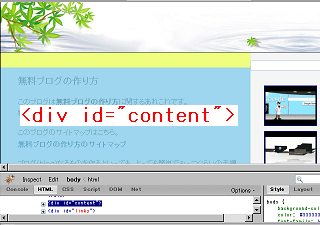
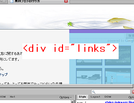

ブログ右サイドバーが下にずれるの修正方法
ブログの右サイドバーはときどき下の方へと移動してしまい、レイアウトがくずれちゃっていることも多いと思うんですが、この原因にはいろいろな要因があると思うんで修正方法も難しいものだなと思います。
ブログの右サイドバーが下部に移動の原因
ブログの右サイドバーが下に移動しちゃって、レイアウトが崩れてしまう原因は、たいていは大きな画像をブログの記事欄やサイドバーに貼り付けてしまい、ブログの横幅に収まらなくなるからなんです。
ブログの横幅に収まらないものは、改行されない url や html タグなどもありますが、たいていは画像がはみでちゃうケースが多いようです。
シーサーブログでもFC2ブログでも、たいていどこのブログでも、ヘッダーやメイン、右サイドバーやフッターがあると思いますが、ブログのレイアウトの領域はだいたいこんな感じになってます。
content（メイン）の領域

links（右サイドバー）の領域

このメインの領域や右サイドバーの領域は、スタイルシートのCSSで見てみると、横幅や縦幅が絶対指定で何pxと指定されている場合が多いです。
スタイルシートのCSSで、links（右サイドバー）の場所などを確認してみると、たぶん、width:250px; とかって指定されている場合が多いと思います。
この 250px とかって横幅を指定している右サイドバーやメインに、たとえば、300px の大きな画像を貼り付けてしまうと、収まりきれなくなっちゃって、右サイドバーが下に落ちちゃう原因になってしまうんです。
ブログ右サイドバーが下に落ちるの修正方法
なので、ブログの右サイドバーが下に落ちちゃった場合の修正方法としては、大きな画像を貼り付けない、もしくは画像を縮小してちっちゃくすることが一番です。
画像をサムネイル表示にするという方法でもいいかと思います。
でも、理論上では間に合う横幅pxなのに、どうして下に落ちちゃうんだろう？ってこともあったりしますが、そんな時は、たいていＩＥバグがあれこれしているはずです。
ＩＥでは margin の px の値を２倍に表示するという仕様になっているので、ファイアーフォックスではちゃんと表示されてても、ＩＥでは崩れちゃうことが多いんです。
これはおそらくは、ＩＥ７ではきちんと表示されていても、ＩＥ６では崩れているということもあるかもしれませんが、ＩＥ６できちんと表示されるぐらいまで、画像を縮小するといいと思います。
もしくは、画像が入りきるぐらいの大きさまで、元の px を拡大すればいいのですが、サイドバーの links の値を大きくすると、その links が入っている container 自体も大きくしないといけないって感じで何かと面倒です。
シーサーブログのレイアウトの領域
上の画像では、content（メイン）の領域の画像しか貼り付けてませんが、実際はその下に blogbody や text の領域があるので、おそらくは最終的に、text の領域に収まる感じの画像の大きさにすればいいと思います。
text の領域

でも、padding などの余白部分を設定している場合は、その分も差し引かなくてはいけないんで、やっぱ画像はちっちゃめがいいのではないかなっていう気がします。
シーサーブログＣＳＳのスタイルシートのレイアウトに関してはFirebug とシーサーブログＣＳＳのところに書いてますが、あなたのブログのレイアウトを調べる際は Firebug を使えば一目瞭然で楽チンです。
シーサーブログの場合、上のは右サイドバーの２カラムですが、これが左サイドバーや両サイドバーの場合は、links-left などが出現してくるもようです。
ブラウザの解像度と相対指定でもレイアウト崩れ
たいていは、画像の大きさをレイアウトの横幅に収まるぐらいまでちいさくすれば、右サイドバーのレイアウト崩れは修正することができます。
でも、たまに画面の解像度で 1024x768 に設定している場合はちゃんと表示されているのに、800x600 の解像度で見てみるとぐだぐだに崩れちゃうこともあったりしますが、これの理由はよくわかりません。
画面の解像度にはざまざまな種類があるので、ブログのアクセス解析でシェアの多い画面の解像度に合わせたレイアウトをすればいいとは思いますが、なるべくならどの解像度でもきちんと表示されるようにしたいものです。
このブログの場合では、ブログの横幅を相対指定しているのですが、1024x768 の解像度で見た場合、文字列が横長になってしまうので、左右への眼球運動が多少必要になるためか、目疲れちゃうと思うんです。
でも、ブログの背景画像を黄金にするって決めちゃってるんで、普通の 800 ぐらいの横幅絶対指定にするとまぶしくってかえって目が疲れちゃうんで、どうしたものかなって思うんです。
そんなこんなで、どこかを修正すれば、あっちが崩れちゃうって感じだと思うんで、アクセス解析を見てみて、シェアの多いブラウザと画面の解像度できちんと表示されれば、それでいいんじゃないかなって気がします。
- ファイアーフォックスとＩＥのＣＳＳズレ
無料ブログでスタイルシートをカスタマイズするときにかなりやっかいなのは、ファイアーフォックスとＩＥでズレが生じてしまうことではないかなと思います。現在、インターネットでＩＥのブラウザを利用している人が... - ＨＴＭＬと無料ブログ
ＨＴＭＬの知識は無料ブログを作成する場合、それほど必要ないかと思いますが知っておいた方が楽しいです。というわたしもそれほど詳しくないのですが、ＨＴＭＬっていうのはブラウザが画面でページを表示する際のも... - ファイアーフォックスとＩＥのブラウザ表示
ファイアーフォックスとＩＥではブラウザの表示に違いが若干あるようです。ブラウザごとに自分のブログやサイトがどのように表示されるかは、ブラウザをインストールしなくても確かめることのできるサイトもあったり... - 横幅widthをpxから%で相対指定のCSS
アクセス解析を見てみると、画面の解像度を 1024x768 で設定している人が多いようなので、ブログの横幅 px を解像度 1024x768 に合わせた長さに設定した方がいいのかなって思うんです。たぶ...